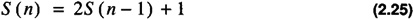

by Alan Parker
CRC Press, CRC Press LLC
ISBN: 0849371716 Pub Date: 08/01/93
|
|
Algorithms and Data Structures in C++
by Alan Parker CRC Press, CRC Press LLC ISBN: 0849371716 Pub Date: 08/01/93 |
| Previous | Table of Contents | Next |
The Tower of Hanoi problem is illustrated in Figure 2.1. The problem is to move n discs (in this case, three) from the first peg, A, to the third peg, C. The middle peg, B, may be used to store discs during the transfer. The discs have to be moved under the following condition: at no time may a disc on a peg have a wider disc above it on the same peg. As long as the condition is met all three pegs may be used to complete the transfer. For example the problem may be solved for the case of three by the following move sequence:
where the ordered pair, (x, y), indicates to take a disk from peg x and place it on peg y.
Figure 2.1 Tower of Hanoi Problem
The problem admits a nice recursive solution. The problem is solved in terms of n by noting that to move n discs from A to C one can move n - 1 discs from A to B move the remaining disc from A to C and then move the n - 1 discs from B to C. This results in the relation for the number of steps, S (n), required for size n as

with the boundary conditions
Eq. 2.25 admits a solution of the form
and matching the boundary conditions in Eq. 2.26 one obtains
A growing field of interest is the visualization of algorithms. For instance, one might want to animate the solution to the Tower of Hanoi problem. Each disc move results in a new picture in the animation. If one is to incorporate the pictures into a document then a suitable language for its representation is PostScript.1 This format is supported by almost all word processors and as a result is encountered frequently. A program to create the PostScript® description of the Tower of Hanoi is shown in Code List 2.6 The program creates an encapsulated postscript file shown in Code List 2.7. The word processor used to generate this book took the output of the program in Code List 2.7 and imported it to yield Figure 2.1! This program illustrates many features of C++.
1PostScript® is a trademark of Adobe Systems Inc.
The program utilizes only a small set of the PostScript® language. This primitive subset is described in Table 2.3.
| Command | Description |
|---|---|
| x setgray | set the gray level to x.x = 1 is white and x = 0 is black. This will affect the fill operation. |
| x y scale | scale the X dimension by x and scale the Y dimension by y. |
| x setlinewidth | set the linewidth to x. |
| x y moveto | start a subpath and move to location x y on the page. |
| x y rlineto | draw a line from current location (x1, y1) to (x1 + x, y1 + y). Make the endpoint the current location. Appends the line to the subpath. |
| fill | close the subpath and fill the area enclosed. |
| newpath | create a new path with no current point. |
| showpage | displays the page to the output device. |
The program uses a number of classes in C++ which are derived from one another. This is one of the most powerful concepts in object-oriented programming. The class structure is illustrated in Figure 2.2.
In the figure there exists a high-level base class called the graphic context. In a typical application a number of subclasses might be derived from it. In this case the graphics context specifies the line width, gray scale, and scale for its subsidiary objects. A derived class from the graphics context is the object class. This class contains information about the position of the object. This attribute is common to objects whether they are rectangles, circles, etc. A derived class from the object class is the rectangle class. For this class, specific information about the object is kept which identifies it with a rectangle, namely the width and the height. The draw routine overrides the virtual draw function for the object. The draw function in the object class is void even though for more complex examples it might have a number of operations. The RECTANGLE class inherits all the functions from the GRAPHICS_CONTEXT class and the OBJECT class.
In the program, the rectangle class instantiates the discs, the base, and the pegs. Notice in Figure 2.1 that the base and pegs are drawn in a different gray scale than the discs. This is accomplished by the two calls in main():
Any object of type RECTANGLE defaults to a set_gray of 0.8 as defined in the constructor function for the rectangle. Notice that peg is declared as a RECTANGLE and has access to the set_gray function of the GRAPHICS_CONTEXT. The valid operations on peg are:
The virtual function draw in the OBJECT class is hidden from peg but it can be accessed in C++ using the scoping operator with the following call:
| Previous | Table of Contents | Next |
){kind=link}